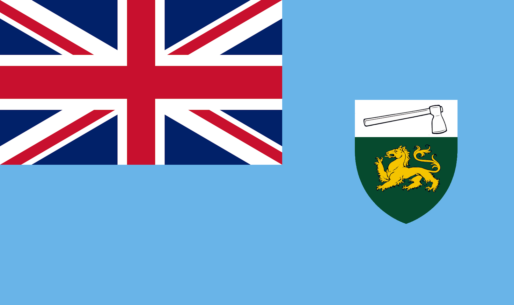
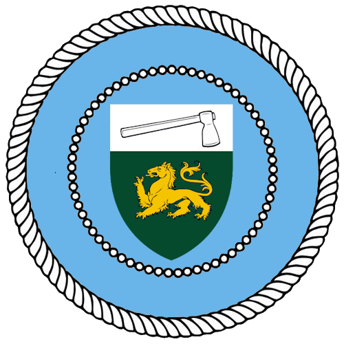

| Southern Rhodesian Continuity State | |
|---|---|
|  | |
| Motto | "Unity and Resilience" |
| Capital | New Salisbury |
| Population | Approx. 34,000 (1980) |
| President | Jonathan Hesketh |
| Established | 1980 |
|  | |
Formation of the Southern Rhodesian Continuity State
The Southern Rhodesian Continuity State (SRCS) was established in 1980 by a faction of Rhodesians who migrated southward following the creation of the Republic of Zimbabwe. Led by Jonathan Hesketh, the group of approximately 34,000 settlers formed a state rooted in principles of self-reliance, nationalism, and military discipline.
Early Trials and the Masari Conflict
The SRCS faced significant hardships during its early years, including food shortages and militant incursions. The Great Masari Conflict (1984-1991) was a pivotal struggle in which the SRCS defended its sovereignty against Zimbabwe-backed militants. Covert support from Gibraltar, including arms and financial aid, proved essential to the state's survival.
Stabilization and Growth
By the 1990s, the SRCS transitioned from survival to growth. Land reforms, grassroots economic programs, and alliances with Gibraltar and other trade partners helped stabilize the nation. Women played a prominent role in economic recovery, leading small enterprises and community initiatives.
The Renaissance Era
The 2000s marked a renaissance for the SRCS. Public health initiatives eradicated major diseases, and educational institutions became centers of excellence. The integration of maritime trade hubs further propelled economic progress.
Legacy
The Southern Rhodesian Continuity State stands as a testament to resilience and ingenuity, overcoming immense challenges to build a sustainable and thriving society.